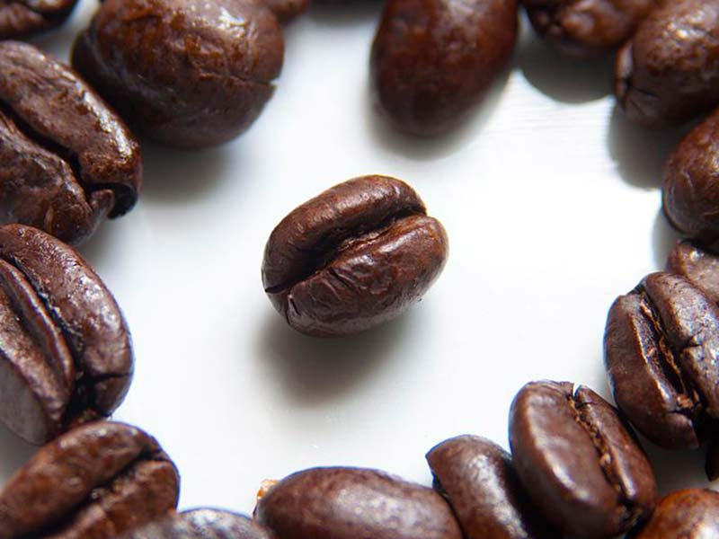

Escrito por el invitado Mike Walsh de Imaginalgo.com
El Café
- 
-

El Café
Aaaa, café. Bencina de la mañana. Invitado a muchas reuniones sociales. Se encuentra en tantas diferentes maneras: caliente, frío, natural, orgánico, procesado, dulce, amargo...
El grupo étnico Oromoo (La Poderosa) se dice era el primero en descubrir el café y unas de sus calidades más apreciadas: que sea estimulante. Un cuento dice que un pastor de lo que hoy es Etiopia – un tal Kaldi – notó el efecto de las hojas y frutos del arbusto de café y lo llevó a un monasterio musulmán. Las monjas habían tomado la bebida preparada para no quedarse dormidas en sus labores nocturnas.
El café, desde su origen en África en el siglo XV, extendió a todo el medio oriente y África. Después, llegó a Italia y pasó por toda Europa, por fin llegando a las Américas. Llegó a Brasil en el siglo XVIII; 1727 fue el año de la primera plantación de café en el país n° 1 en producción hoy.
Botánicamente hablando (si uno puede decirlo así, y con mi poco conocimiento de flora) el café, que crece en zonas tropicales, viene de arbustos del género coffea. Hay dos especies que son origines de la bebida que conocemos: El coffea arábica y el coffea canephora. ¿Las diferencias?
Producción de coffea arábica y coffea canephora en el mundo. R son productores de coffea canephora (Café Robusta), A son productores de coffea arábica (Café Arábica), y M son productores de ambos.
- Coffea arábica: Es lo más antiguo de los dos. Tiene su origen en el ahora Etiopia. Se cultiva en las alturas (entre 900-2000 metros sobre el nivel del mar). Es más delicada, más complicada producir, y más vulnerable al hongo Hemileia vastatrix. El producto final es más fina y aromatica que el robusto. El 75% de la producción del café mundial es de este variedad.
- Coffea canephora: Tiene su origen también en África, en el Congo. Se cultiva en los llanos y rinde más que el arábica. También se resiste mejor el hongo amenazante (su nombre “robusto” viene de esta resistencia). Dado a su mayor rendimiento, se usa el coffea canephora para hacer café instantáneo. Más cafeína, más cuerpo, menos aroma.
Hay tantas diferentes maneras de preparar y servir el café, y sería un discurso, una clase, un curso entero para explorarlas en profundidad. Pero, si te vas a una cafetería hoy y quieres evitar confusión total, aquí hay algunas de las preparaciones más comunes:
- Espresso: De origen italiano, es el corazón del café moderno. Todos los cafés “pitucos” que se encuentran en las cafeterías de hoy (cappuccino, latte, moka, etc.) tienen como su base el espresso. También se puede tomar espresso solo. ¡Es fuerte! Un espresso ocupa entre 7-10 gramos de café, demora 20 a 30 segundos en prepararse, y rinde 30ml de café.
- Ristreto: Este no es tan común que el espresso, pero es un espresso concentrado. La idea es cortar el proceso del espresso temprano, limitando el tiempo y cantidad de agua que pasen por el café. El resultado es una bebida aproximadamente la mitad del espresso. Comparando con un espresso, un ristreto rinde 15ml de café.
- Capuchino: Un café preparado con un tercio de espresso, un tercio de leche caliente y un tercio de espuma de leche.
- Café cortado: Un cortado es un espresso con espuma de leche. En tazas de vidrio, se ve comúnmente el café y la leche separada, o “cortados”. Hay muchas cafés que son variaciones del cortado, incluso…
- Café moka: Básicamente es un cortado con chocolate.
- Café bombón: Un café moka con leche condensada además.
- Café árabe: Un café fuerte, con canela, cardamomo, y un café molido súper finamente (casi como polvo) agregado a agua hirviendo.
Bueno, esto es solo una comienza del mundo de café, pero es algo. Les dejo con dos datos más acerca de los beneficios de café, uno para la salud y otro para el madioambiente.
Aunque hay muchos estudios que expresan dudas o conflictos en cuanto a los beneficios, algunos positivos relativamente comprobados son:
- Reducción de la diabetes mellitus tipo 2.
- Aliviar síntomas de enfermedades cardiovasculares, cáncer y cirrosis.
- Desmineralización del cuerpo humano dado a un PH corporal más ácido.
Con respeto a los beneficios ecológicos, se puede usar los restos del café como fertilizante. En particular, plantas que prefieren tierra más ácida (por ejemplo, los arándanos) disfrutan de esta fertilizante.
Espero que han disfrutado esta breve exploración al mundo del café. Ahora ¡vayan a su cafetería local y tómanse un café!